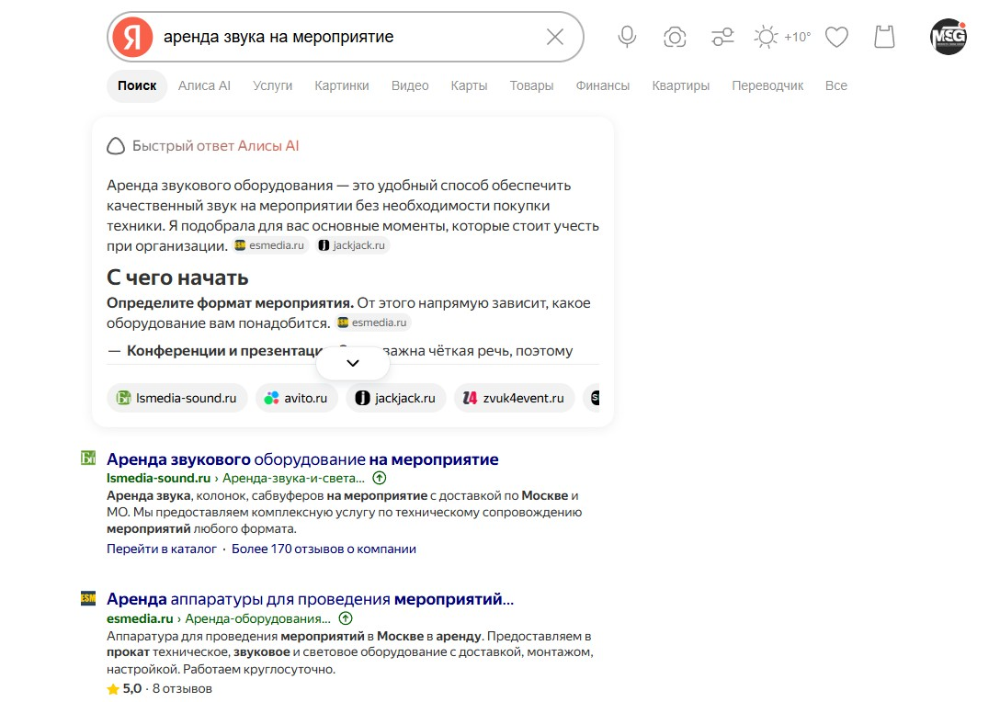

Ивент-агентство
КТОПродюсер · аккаунт · техдир
ЗАДАЧАЗакрыть райдер или найти замену подрядчику
ТЕМА«Что уточнить в райдере до монтажа?»
Поиск · публикация у партнёраАудитории, конкуренты, рекламные площадки и контент. Ниже — ключевые наблюдения, источники и варианты дальнейшей проверки.
Не распылять один маленький бюджет на все 97 фраз. Сначала закрыть спрос с понятной услугой, отдельным сообщением и посадочной под каждого покупателя.
* ≈11,6 тыс. ₽ при объёме трафика 62; ≈28,1 тыс. ₽ при объёме 100. Прогноз Директа за 30 дней по Москве и МО, снят 28.10.2026; реальный расход может отличаться.
Сегмент — это роль покупателя и его задача. Каждая публикация и посадочная говорят с одним сегментом.
Это стартовые сегменты для обсуждения. Спрос и отклик аудитории будем проверять отдельно.
У конкурентов заметны три формата: профессиональный юмор, инженерная задача и сюжет с людьми. Берём механику, но снимаем свои истории.
В поиске уже есть сформированный спрос. VK и публикации в сообществах требуют отдельных проверок; сам охват не показывает качество обращений.
Перехватываем людей, которые уже ищут подрядчика: «техническое обеспечение мероприятий», «звук на корпоратив», «генератор на мероприятие».
Проверено 97 фраз, найдено 386 текстов 208 рекламодателей. Рынок часто обещает «под ключ», перечисляет технику и показывает отзывы. Связку генератор + звук/свет и отдельное предложение агентствам почти не видно.
| Группа | Прогноз на 30 дней | Роль |
|---|---|---|
| Техобеспечение | 2 125 ₽ при объёме 62 | Основной оффер |
| Звук | 6 863 ₽ | Отдельные ключи, исключить розничный прокат |
| Генератор / электрика | 187 ₽ | Малый нишевой тест |
| Агентства | 205 ₽ | Райдер и партнёрская страница |
| Конференции | 1 222 ₽ | Микрофоны, экран, зал |
| Выездной театр | ≈1 008 ₽ | Отдельная услуга и посадочная |
| Итого | ≈11 610 ₽ | Прогнозный тест, не фактический расход |
Показываем понятные сценарии людям из event-среды и организаторам. Цель теста: запрос с датой и задачей, а не дешёвый клик.
В выборке Event Hunt было 9 оплаченных публикаций пяти рекламодателей за месяц, но технических подрядчиков не обнаружили. Публичные стены не показывают закрытые кампании конкурентов.
Здесь продаём не прокат абстрактного оборудования, а решение конкретной задачи организатора. Для агентств приоритетнее городских развлекательных пабликов.
IQLAB размещал короткое видео с конкретной услугой, доказательствами, условиями работы и CTA на партнёрский прайс; тот же пост повторяли через неделю. Мы копируем структуру, не чужие цифры и скидки.
Сначала заполнить карточку и собрать реальные отзывы. Затем тестировать рекламное продвижение по локальным запросам, если карточка показывает звонки и маршруты.
В Пушкино в выборке по аренде звука пять организаций и ни одного платного промо; по Москве продвижение встречалось часто. Но для выездной команды карта не заменяет сайт и поиск.
В октябре–ноябре 2026 не закладываю сюда регулярный медиабюджет. Для Telegram и YouTube ФАС объявила переходный период по мерам ответственности до конца 2026 года; это не означает, что все юридические вопросы сняты. Реклама в Instagram/Meta не планируется.
Перед любым размещением в Telegram или YouTube нужно заново сверить ограничения, договоры, маркировку и актуальные разъяснения. Контентные форматы и конкурентные примеры можно изучать отдельно от покупки рекламы.
Разъяснение ФАС от 25.03.2026 ↗
Ограничения и срез площадок ↗«Без покупки охвата» здесь означает без покупки рекламного охвата. Профиль, заявка, карточка и контент всё равно требуют времени; площадка может брать плату за отклик, публикацию или продвижение.
Органический профиль помогает ловить локальные запросы и получать доверие через портфолио, описание и отзывы. В Пушкино и соседних городах органическая выдача по технике в основном состоит из частных исполнителей.
Добавить корректную организацию, зону выезда, фото с площадок, список направлений, часы ответа и ссылки на сайт. После каждого завершённого проекта попросить честный отзыв.
Проверить отдельные объявления для техобеспечения и звука с выездом. Москва конкурентная: в исследовании по аренде звука найдено около 1 301 объявления. По Пушкино/Мытищам актуальную плотность надо проверить вручную.
В московском исследовании по аренде звука нашли 38 компаний и 17 отзывов за год; среди заявок была задача из Мытищ с райдером группы и бюджетом 100 тыс. ₽.
В выборке активно публиковались только 9 из 29 сообществ. Полезные разборы, человек в кадре и отдельный партнёрский оффер помогут заполнить пустоту без покупки каждого показа.
В Event Hunt зафиксирован регулярный поток запросов от агентств и заказчиков. Отслеживать поиск подрядчика на звук, свет, экран, генератор и выездное шоу; отвечать по делу, с кейсом и вопросом о дате/райдере.
У ивент-агентства часто повторяются проекты, поэтому один надёжный контакт может дать больше ценности, чем широкий охват. Партнёрская программа MF Group и отдельный пост DA Sound подтверждают, что конкуренты прямо обращаются к этому сегменту.
Создать отдельные страницы под техобеспечение, звук, конференции, электрику и агентства. На каждой дать реальные фото, список работ, ответы на частые вопросы и кейс с цифрами, которые можно подтвердить.
2ГИС заблокировал просмотр в нашем исследовании, поэтому ни отсутствие конкурентов, ни эффект продвижения утверждать нельзя. Заполнить карточку, если компания там доступна, затем сверить выдачу по Москве и Пушкино.
На YouTube у «Спектра» уже есть Shorts с примерно 900–1 700 просмотрами при небольшом канале; короткий ролик с монтажом набрал больше, чем длинный влог. В исследовании лучше выглядели POV техника, прикладные ответы и истории с людьми.
Instagram использовали как источник конкурентных идей; рекламное продвижение в РФ не планировать. Для Telegram и YouTube действуют ограничения и переходный период по ответственности до конца 2026 года. Контент без оплаты за показ не всегда означает отсутствие рекламно-правового риска. До активного продвижения сверить актуальные правила.
Открыть глубокий Instagram-аудит ↗Переносим то, что конкуренты уже регулярно используют или что заметно отозвалось аудитории. Переносим структуру и психологический механизм, не копируем чужой текст, кадр, бренд или неподтверждённые обещания.
Честно про слово «работает»: закрытой статистики продаж конкурентов нет. Четыре идеи опираются на повторяющиеся приёмы конкурентов и заметные публичные сигналы. Мы не знаем их закрытые продажи и конверсии: это кандидаты для первого собственного теста, а не доказанные победители.

01 · услуга точно под запросМеханика рынка: Jack-Jack адаптирует тексты под звук, корпоратив, свадьбу и работу звукорежиссёра; в выборке появлялся в 7 снимках. ABK показывает, что входит в услугу, договор и документы.
Не заявлять собственное оборудование/конкретный срок расчёта без проверки.
 02 · партнёрский оффер
02 · партнёрский офферМеханика рынка: MF Group оформляет партнёрскую программу для агентств отдельно от частного заказа. Пост набрал 14 лайков; презентация партнёрства DA Sound также получила заметный отклик.
Условия конфиденциальности, цена и защита клиента только после согласования внутри команды.
 03 · сначала польза
03 · сначала пользаМеханика рынка: SMARTMICE пять недель выпускал полезные материалы и вёл на отдельную страницу. На примерах постов зафиксировано примерно 1,1–1,2 тыс. просмотров, но лиды неизвестны.
Бесплатный материал должен быть действительно полезным, затем предлагать консультацию/расчёт.
 04 · человек и мини-сюжет
04 · человек и мини-сюжетМеханика рынка: клип «Море Шоу» с персонажами собрал 164 лайка и 20 репостов против медианы сообщества около 4 лайков. Акционный пост «−20%» получил один лайк.
Отклик аудитории не равен заявке; сюжет должен быть про реальные события команды.
Почему это наше: в конкурентной выдаче почти не встречается связка генератора/электрики с техобеспечением события; при этом в отзывах заказчики прямо боятся сбоев питания и поиска второго подрядчика.
Запускать только после проверки оборудования, партнёров, допуска и ответственности за электротехнические работы.
Отчёт VK ↗ · Отчёт по Telegram ↗ · Примеры поиска ↗ · Платные публикации ↗
Каждая карточка ведёт к разбору канала ниже или к отдельной подробной странице. Первичные отчёты доступны внизу сайта.
По всему ядру просмотрено 97 запросов. SpyWords дал данные для 25; по остальным проверена живая выдача. В сумме собраны 386 текстов от 208 доменов. 28 октября вручную зафиксированы 56 появлений рекламных карточек в просмотренных выдачах (Москва и Пушкино) — это не кабинетные показы и не клики.
«Техническое обеспечение мероприятий» — прогноз 1 036 запросов за 30 дней по Москве и МО. Средняя оценка клика в Директе при объёме 62 — около 56 ₽; выдача смешанная, поэтому нужны минус-слова и правильная посадочная.
Прогноз, октябрь 2026В кластере звука 74 домена на 18 фразах. Звук — 247 запросов, звуковое оборудование — 241. LED-экран в прогнозе: клик около 136–316 ₽ по семантике; не запускать без отдельной экономики.
Сводка 386 объявленийВзрослый выездной театр, технический подрядчик агентствам, генератор вместе со звуком и электрикой редко представлены. Театр — около 1 008 ₽/мес на четыре фразы в тестовом прогнозе.
Есть конкуренты шоу, но не этот комплект| Кластер | Фраз | Прогноз ₽ / 30 дней · объём 62 | Прогноз ₽ · объём 100 | Решение |
|---|---|---|---|---|
| A · Техобеспечение под ключ | 13 | 2 125 | 5 557 | Запускать первым; высокий основной спрос, очистить нецелевую семантику. |
| B · Звук | 18 | 6 863 | 17 310 | Запускать по аренде для мероприятий, отдельно от розничного проката. |
| E · Генератор / электрика | 6 | 187 | 346 | Малый тест внутри связки технического подрядчика; спрос точный, рекламы почти нет. |
| G · Для агентств | 5 | 205 | 302 | Отдельный B2B-оффер и лид-форма с загрузкой райдера. |
| H · Конференции | 5 | 1 222 | 2 245 | Включить после базовых групп; отдельный набор «микрофоны / экран / конференция». |
| T · Выездной театр | 4 | ≈1 008 | ≈2 288 | Сразу отдельная страница; минус-слова против детских театров и билетов. |
| Всего стартовый набор | 51 | ≈11 610 | ≈28 048 | Тестовый контур; бюджеты прогнозные, без НДС. |
Бюджеты — расчёт Яндекс.Директа на 30 дней, снят 28.10.2026. Кластер «звук и свет на корпоратив» имеет нулевую прогнозную частоту, хотя отдельные объявления могут показываться по широким запросам. Наличие показов не гарантирует клики и заявки.
Ниже рейтинг по присутствию и наблюдаемым сигналам. «Сильный» означает понятный оффер, стабильность в выдаче или много показов. Никакой конкурентной конверсии в нашем распоряжении нет.
В выборке 35 появлялся по 7 запросам/снимкам; 5–6 текстовых вариантов под корпоратив, свадьбу и звукорежиссёра. В профиле были рейтинг 4,5/24 отзыва и кейс с названием артиста. На посадочной заголовок совпадает с объявлением, есть форма и мессенджеры.
Факт из разового мониторинга; не утверждение о числе заявок.
8 из 56 появлений рекламных карточек в снимках 28 октября. За год профиль SpyWords был в рекламе 12/12 месяцев; число объявлений выросло с 39 до 95 (янв.→сен. 2026), оценка дневного бюджета — с 30 до 321 ₽. Вариантов 5, рейтинг 5,0 при 8 отзывах.
Объявления генерируются в том числе автотаргетингом; бюджет и рост объявлений — оценки сервиса, не ROI.
По SpyWords объявления выросли с 2 125 до 4 845; 20 из 20 отобранных объявлений помечались как автотаргетинг. В цепочке встречались «лофты», чужие бренды и нерелевантные запросы. Это масштаб автоматизации, но не доказательство качества трафика.
SpyWords зафиксировал лидерстейдж в истории объявлений. Soundcheck отдельно пишет «расчёт за 15 минут»; ещё два домена обещают расчёт за 5 минут. Срок сам по себе не уникален.
Обещать 15–20 минут только если операционно команда выдерживает этот SLA.
В SpyWords — 12/12 месяцев, около 1 274 ₽/день в сентябре и 1 657 ₽/день в среднем по оценке за год. При этом заметная часть крупных аккаунтов покупает широкие автотаргетинговые показы, включая «лофт» и чужие бренды.
На посадочной: один договор/акт, расчёт в день обращения, отсрочка платежа и закрывающие документы. Это самый близкий к клиентским страхам corporate/B2B пример из мониторинга.
Цена «от 150 000 ₽» — их оффер. Для «Спектра» эту планку не публиковать до согласования Машей и Давой.
Не переносим один макет везде. Сохраняем общий смысл, а объявление собираем под место показа.
Запрос → заголовок → предложение → доказательство → действие. Совпасть с тем, что человек ввёл: например, звук для конференции или техподрядчик для райдера.
Основная оценка: стоимость квалифицированного обращения. CTR и CPC помогают понять, где проседает связка.Кадр / видео → короткий хук → одна выгода → доказательство → действие. Показать площадку, инженера или трансформацию события; вести на страницу именно этого предложения.
Основная оценка: качество и стоимость квалифицированного обращения. Отдельно проверять площадки и частоту.Звук, свет, сцена и техническое сопровождение. Москва и Московская область.
ЗАПРОСИТЬ СМЕТУКадр: инженер сверяет райдер на площадке.
ЗАПРОСИТЬ СМЕТУЭто рабочие черновики, основанные на подтверждённых преимуществах «Спектра». Перед публикацией подтвердить срок расчёта, договорную схему, генератор/партнёрскую модель, документы и театр.
Техобеспечение: курсы, обучение, вакансии, IT, регата, роботы, аренда площадки/банкет. Звук: купить, продажа, караоке, самовывоз, без залога, колонки. Театр: детский, кукольный, билеты, детский сад, студия. Генераторы: стройка/ДГУ/дым и туман — по фактическим поисковым фразам.
Первый экран отвечает «для кого / что решаем / когда ответим». Ниже: порядок работы, состав услуги, кейс с ограничением и решением, фото команды, документы, ответы о монтаже/демонтаже и форма с датой, городом, площадкой, числом гостей и возможностью загрузить райдер.
Ручные снимки поисковой выдачи по Москве и Пушкино. Считали, кто и с каким текстом появился в выборке запросов. Повторный показ карточки в другом запросе мог попасть в счёт.
Расчёт планировщика на месяц для выбранного ядра, объём трафика 62. Есть прогнозные показы, клики, CTR и стоимость клика. Это оценка до запуска; фактического кабинета кампании и её статистики в исследовании нет.
У 8 из 9 проверенных доменов найдены объявления РСЯ. Видны только 10 последних записей на домен; оценивали тексты и длительность обнаружения, но не клики и конверсии.
Лимит демо Keys.so остановил мобильный сбор. Кампании «Спектра» не запускались, поэтому фактических кликов нет. Реальный тест потребует отдельной настройки Поиска и РСЯ, Метрики, UTM и учёта квалифицированных заявок.
В выборке изучены 29 компаний, 16 сообществ и 12 подробных групп. Публичные стены показывают органику; они не раскрывают таргетированные объявления из рекламного кабинета.
Только 9 публиковали за последний месяц. У сильных технарей реакции скромные: медиана MF Group около 4–5 лайков. Регулярный полезный контент и лицо команды уже выделят «Спектр».
По Event Hunt и городским сообществам обнаружены рекламные посты шоу, сайтов, костюмов, артистов и ресторанов. За год в выборке не найдено оплаченных креативов аренды звука, света, экранов и генераторов.
В поиске сообществ по «аренда звука Пушкино» нашлась одна небольшая группа из Королёва. В локальных пабликах реклама техники почти не встречалась; фактическое наличие таргета отдельно не видно.
Публичные реакции не равны заявкам, но помогают выбрать формат теста.
Дед Мороз и Снегурочка под узнаваемый трек
164 лайка и 20 репостов против медианы сообщества 4 лайка. У той же компании пост «Чёрная пятница −20%» — 1 лайк.
MF Group: программа для агентств и знакомство с технической командой
Лучший технический пост в выборке — 14 лайков. Презентация DA Sound для партнёров набрала 11 лайков, репост партнёра — 12.
54-секундное видео + текст. «Надёжный подрядчик научных шоу для ивента»; «13 лет», «1 500+ мероприятий в год», «приезд за 30 минут», договор и постоплата; новым партнёрам — 5 000 ₽ на первый заказ. Призыв: «Пришлём партнёрский прайс и примеры программ» в Telegram. Один пост повторили через неделю.
Переносим структуру и снятие риска; не переносим неподтверждённые цифры, скидку или постоплату.
Открыть снимок креатива ↗Кампания 1: агентства и event-подрядчики в Москве/МО → страница партнёрам → заявка с райдером.
Кампания 2: организаторы конференций / городских событий → кейс и форма расчёта.
Креативы: фото инженера + конкретная задача; короткий вертикальный ролик «до → решение → готовая площадка».
Установить пиксель и цели до запуска. Тестировать маленьким бюджетом; не называть охват конкурентов результатом таргета.
Полный анализ сообществ ВКонтакте ↗ · Платные посты VK и Telegram ↗ · Сервисы мониторинга креативов VK ↗
В выборке проверены 41 канал и 7 017 постов. За 12 месяцев отмечено 288 рекламных публикаций, но среди подрядчиков по техническому обеспечению мероприятий не найдено ни одной.
Из 11 размещений ивент-подрядчиков семь брендов продавали шоу, сервисы агентствам, постановку и другие «номера». Ни звук, ни свет, ни экран, ни генератор не рекламировались.
По снимкам рекламный пост Event ru набирал примерно 1,1–1,6 тыс. просмотров, ВМЕСТЕ — 900–1 080, «Ивент идеи» — 600–2 000. Прайсы размещения публично не найдены.
Городские каналы и группы заполнены ресторанами, детскими праздниками и банкетами; техника не видна. Подходит для отдельного спектакля/корпоратива, если аудитория и цена теста подходят.
Пять публикаций за пять недель в двух каналах. Начинали с болей («аврал», «наценка за срочность до 50%»), давали конкретный бесплатный гайд/каталог, ссылку в отдельный лендинг с UTM. В просмотрах зафиксированы 1 110 и 1 200 на отдельных постах.
Идея для «Спектра»: чек-лист подготовки райдера или краткая таблица «какая мощность нужна на площадке». Лид-магнит должен помогать агентству, затем предлагать расчёт.
Открыть креатив ↗Одинаковое видео и текст выходили 20 и 27 октября в Event Hunt. Цифры и процесс снижали риск, призыв вёл к партнёрскому прайсу и примерам программ в Telegram. Для «Спектра» можно повторить принцип серией разных аргументов: срочная замена, комплект по райдеру, документы, генератор, кейс.
Сезонные размещения новогодних корпоративов начинают появляться с конца сентября — начала октября.
Открыть креатив ↗Профили и каналы Telegram ↗ · 350 найденных платных постов и выборка креативов ↗ · Что удалось собрать в TGStat ↗
Яндекс остаётся главным платным источником, но локальная видимость и отзывы снижают риск для B2B-покупателя и поддерживают конверсию из поиска.
В Пушкино проверены 5 организаций без платного продвижения на дату отчёта; местная техника мало видна. По 20 регионам МО рекламируются те же московские компании, конкретные города в тексте они не называют.
Внести реальные услуги, фото выездов, документы, способы связи и зону обслуживания. Просить отзывы после завершённого проекта.
Google Ads Transparency проверен по доменам: объявлений не обнаружено. 2ГИС, Авито и часть площадок блокировали или ограничивали просмотр; это пробел данных, а не доказательство нулевой рекламы.
Профи.ру и агрегаторы перехватывают часть частного спроса; не конкурировать с ними низкой ценой.
В отзывах заказчики ценят срочную реакцию, приезд и настройку, одного менеджера на связи, документы и отсутствие неожиданных доплат. Эти ожидания стоит учитывать в описании услуги и составе предложения.
Не копировать отзывы. Собрать собственные после проектов и публиковать только с согласия клиента.
Яндекс Услуги / Карты и отзывы ↗ · Google, Авито, 2ГИС и каталоги ↗ · Регионы Московской области ↗
План запускает проверку гипотез. Бюджет и офферы остаются черновыми до подтверждения условий «Спектра» и настройки учёта заявок.
Подтвердить факты и SLA. Развести страницы техники, агентств, конференций, парков и театра. Установить Метрику, цели на звонок/форму/мессенджер, UTM и журнал заявок.
Одна география Москва + МО. Чёткие группы A/B/T; E/G/H маленькими тестами. Раздельные объявления и релевантные посадочные; начать с объёма 62.
Каждые 2–3 дня проверять поисковые фразы и минусовать стройку, товары, детские услуги, вакансии и площадки. Вручную квалифицировать лиды: сегмент, услуга, город, дата, бюджет.
Сравнить стоимость квалифицированного обращения и долю подходящих проектов, а не только CTR. Остановить мусорные группы; добавить бюджет только направлениям с подходящими лидами.
CTR — диагностическая метрика текста и запроса. Главная оценка — цена квалифицированного обращения и маржинальность завершённого проекта. До появления статистики нельзя объявлять вариант объявления победителем.
Каждый тест меняет одну вещь: оффер, доказательство, CTA или аудиторию. Одновременная смена объявления, страницы и ставок не покажет причину результата.
Дата основного рекламного среза — 26–28 октября 2026. Разделы собраны из первичных отчётов проекта. Скриншоты в галереях — части выборки; полный список объявлений находится в исходных документах.
| Тема | Материал | Что внутри |
|---|---|---|
| Основа предложения | 04-маркетинг.md | Аудитории, позиционирование, доказательства и ограничения. |
| Итог по площадкам | 33-реклама-конкурентов-итог.md | Сводка основных выводов и сегментных рекомендаций. |
| VK / Telegram / Instagram / YouTube | 33а · 33б · 33в · 33г | Органика, сообщества, публикации и видео. |
| Яндекс / другие каталоги | 33д · 33е | Услуги, Карты, отзывы, Google, Авито, 2ГИС, каталоги. |
| Инструменты и объявления | 34 · 35 · 37 | Методика оценки креативов, прогноз Директа и история объявлений. |
| Регионы / платные посевы | 41 · 42 | 20 регионов МО, 350 найденных рекламных постов VK/Telegram. |
| РСЯ / TGStat / VK-мониторинг | 43 · 44 · 45 · 48 | Закрытые данные, ограничения инструментов и сервисов. |
| Полная семантика / Meta / соцсети | 46 · 47 · 49 | 97 запросов, Meta Ad Library, аудит социальных каналов. |
SpyWords и прогноз бюджета — оценки внешних сервисов. Снимки выдачи — разовая фиксация; состав рекламы меняется. Пустой результат ограниченного поиска не доказывает отсутствия рекламы. Полные выгрузки кабинетов конкурентов недоступны.
Соцсети: видео с человеком и задачей
Платная реклама конкурентов в VK/Meta почти не проявилась в публичном наблюдении. Это не доказывает отсутствия закрытого таргета. Органика зато показывает форматы, которые можно тестировать своим производством.
Инженерная конкретика
У MF Group ролик «как установить 17-метровую башню 8,6 т» — 32,1 тыс. просмотров; медиана видимых Reels — 3 618. Короткий хук, масштаб и проблема, которую команда решает.
Делать: монтаж на сложной площадке, расчёт питания, схема света, звук в дальней точке.
Мем может дать всплеск, но не прогноз
SHOWIN: профессиональный мем про «ДНК техдира» — 208 тыс. просмотров, при медиане свежей ленты около 647. У Trend Event один ролик — 321 тыс., медиана около 590. Выбросы нельзя использовать как типовой KPI.
Делать: короткий юмор о реальном рабочем моменте и чередовать с кейсами.
Люди и сюжет сильнее каталога сцены
Event-Театр: ролик с художницей-постановщицей — 18,3 тыс. DS Group: закреплённые иммерсивные истории — 34–40 тыс. просмотров. Важны артист, персонаж и сюжет события.
Делать: фрагмент репетиции + как звук/свет меняют впечатление гостя.
Показывать одну вещь или отвечать на один вопрос
LED Media снимает тесты и применения экранов; MisterVO — короткие демонстрации предметов; Event-Театр отвечает на вопросы заказчика. У канала «Спектра» уже есть видео с фестиваля и влог с Ассорти / MARI M: нарезать их в серии и добавить контекст/ссылку.
Практические темы: «сколько звука на 100/300 гостей», «что входит в технический райдер», «как понять, хватит ли питания».
Тестировать вопросы и кейсы, не покупать охват
У SHOWIN 145 подписчиков, у DS Group 149; у DS Group вопрос корпоративным заказчикам получил 12 лайков, 4 ответа и 3 репоста. У SHOWIN экспертные кейсы объясняют роль света и визуализации, но видимых реакций мало. Это органические сигналы, не данные о заявках и продажах. Платный бюджет пока не обоснован.
Открыть разбор профилей и публикаций ↗
Открыть анализ Instagram и Threads ↗ Исследование YouTube ↗ Исходный Instagram/Threads отчёт ↗